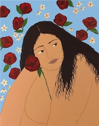

Inspiration Is Reflective
Tyler The Creator
What inspires me most about this artist, is his ability to undeniably himself.
No matter what form of art he puts out, it is always so very clearly him. Something I find the most interesting is how you can tell when something he "made" wasn't actually made by him. For example, GOLF (his clothing brand), no longer is designed by him and is clear that he doesn't design the clothing anymore. I love an artist who's soul you can feel in their work.
Discography
Golf Wang, Clothing Brand
Social Media
Gina M. Contreras
I discovered her around a year and a half ago at a local art gallery that she had a short residency at.
Out of all of the artists featured at the gallery, the emotions from her artwork were what stuck out the most. I admire this artist because every single time I see her work pop up at a local show (for example a skate shop hosted one a year ago!) I am able to understand immediately the meaning and depth of her work. Having that ability to move people is what I admire her most.

Recent Artwork
My Favorite Collection
Octavia Butler
Butler is by far my favorite author, which I do consider a form of art, ever.
I think once again, this artist and the reason why I enjoy their art comes back down to emotions. Her work is insane, reading one of her books for the first time left me entranced. I did not put the book down once (SERIOUSLY!) until I had finished it in about ~2 hours. The work she puts out is politically accurate and incredibly moving to read.